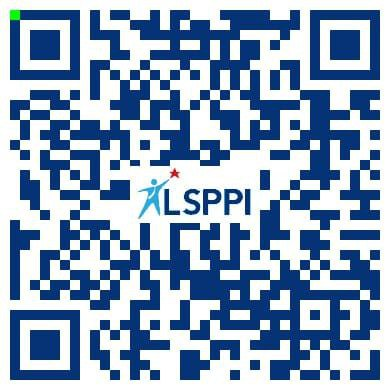

Saya Al Qadri Ikranegara
Berpengalaman di bidang kredit perbankan dan pembiayaan: terbiasa turun langsung ke nasabah, bernegosiasi mencari solusi, dan menjaga kualitas pinjaman.
Pengalaman
Tentang Saya
Saya Al Qadri Ikranegara, lulusan S1 Teknik Informatika Universitas Dipa Makassar. Sejak Mei 2026 saya bekerja sebagai Field Collector (FC) di PT Bank Rakyat Indonesia (Persero) Tbk melalui PT Prima Karya Sarana Sejahtera (PKSS).
Sebelumnya saya bekerja sekitar satu tahun sebagai Field Collection di FIF Group. Dari dua pengalaman ini saya terbiasa turun langsung ke nasabah: memahami kondisi usaha dan kemampuan bayar mereka, bernegosiasi mencari solusi, lalu melaporkan hasilnya dengan rapi.
Pengalaman menangani kredit bermasalah membuat saya paham kenapa sebuah pinjaman bisa macet dan bagaimana menjaga kualitas pinjaman. Saya tersertifikasi LSPPI, menjunjung integritas, dan didukung latar belakang IT serta kemahiran Microsoft Office.
Posisi Saat Ini
Field Collector, BRI (via PKSS) · Mei 2026 – Sekarang
Pendidikan
S1 Teknik Informatika, Universitas Dipa Makassar (2019 – 2023)
Domisili
Jln. Urip Sumoharjo, Makassar
Keahlian
Kredit & Collection
Nasabah & Komunikasi
Administrasi & Digital
Sikap Kerja
Yang Bisa Saya Berikan
Menjaga Kualitas Pinjaman
Pengalaman langsung menangani kredit bermasalah membuat saya mengenali tanda-tanda risiko lebih awal, sehingga bisa ikut menjaga kolektibilitas dan menekan NPL unit.
Survei & Penilaian Lapangan
Terbiasa mengunjungi rumah dan tempat usaha nasabah, memverifikasi kondisi sebenarnya, dan menilai kemampuan serta kemauan bayar sebagai dasar keputusan kredit.
Negosiasi & Relasi Nasabah
Mampu berkomunikasi dengan nasabah dari berbagai latar belakang, termasuk dalam situasi sulit, dan mencari solusi yang adil bagi nasabah maupun bank.
Pemasaran Kredit Mikro
Pengalaman lapangan membuat saya mengenal karakter pelaku usaha mikro di wilayah kerja, modal penting untuk menjaring calon debitur baru yang layak dibiayai.
Administrasi & Pelaporan
Latar belakang Teknik Informatika dan kemahiran Microsoft Office mendukung pencatatan data nasabah, kelengkapan berkas, dan laporan kerja yang akurat serta tepat waktu.
Integritas & Kerja Tim
Menjunjung tinggi etika dan kejujuran dalam setiap transaksi, serta terbiasa berkoordinasi dengan tim unit untuk mencapai target bersama.
Pengalaman
Field Collector (FC)
PT Bank Rakyat Indonesia (Persero) Tbk · melalui PT Prima Karya Sarana Sejahtera (PKSS)
- Mengunjungi dan menagih langsung debitur dengan tunggakan sesuai daftar penugasan dari unit kerja.
- Menegosiasikan komitmen dan solusi pembayaran secara persuasif dan sesuai etika penagihan.
- Memverifikasi keberadaan debitur dan kondisi usahanya di lapangan, lalu melaporkan hasil kunjungan.
- Berkoordinasi dengan pegawai BRI untuk tindak lanjut penyelesaian kredit bermasalah.
Field Collection
FIF Group
- Berinteraksi langsung dengan nasabah pembiayaan di lapangan untuk penyelesaian angsuran.
- Mengasah kemampuan komunikasi, negosiasi, dan pemecahan masalah dengan nasabah.
- Memperoleh sertifikasi profesi Field Collection dari LSPPI.
Magang Lab IT
Perpustakaan Universitas Hasanuddin
- Menginput data buku dan skripsi ke website repository.
- Merekap data menggunakan Microsoft Excel dan Word.
Barista & Waiters
Warkop Balai Kota & Warkop Arena, Makassar
- Melayani pelanggan secara langsung dan menjaga kualitas pelayanan di jam sibuk.
Sertifikasi

Sertifikasi Profesi LSPPI – Field Collection
Sertifikat kompetensi dari Lembaga Sertifikasi Profesi Pembiayaan Indonesia (LSPPI). Pindai kode QR untuk memverifikasi.